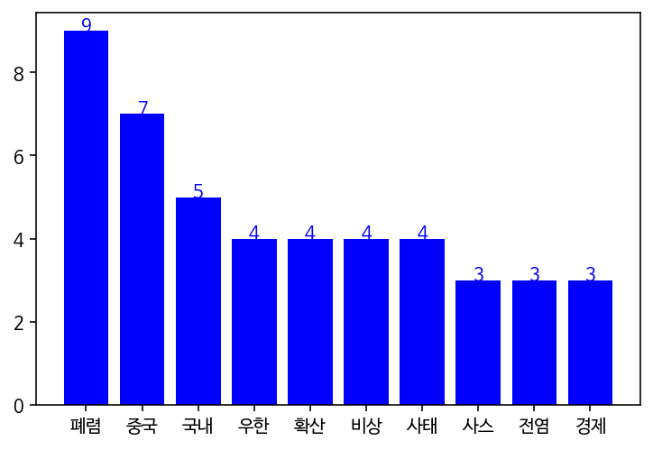
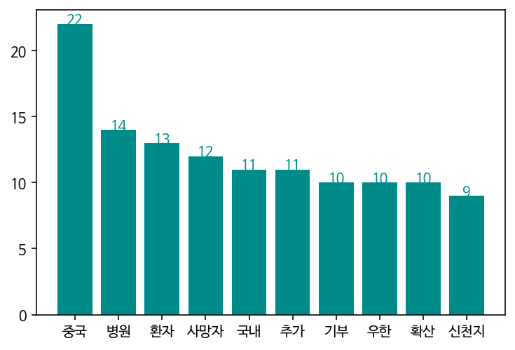

프로젝트 소개
JTBC 크롤링을 통한 코로나19 키워드 분석
1월
#폐렴 #우한 #중국
중국의 우한에서 정체 모를 폐렴이 퍼지다. 아직 원인도 잘 모르지만 이미 1월 20일 기준 218명이 감염됐다고 한다. 우리나라는 괜찮은걸까?
'원인불명' 중국 폐렴…홍콩 이어 싱가포르서도 의심환자#국내 #확산
1월 21일, 국내에서도 첫 확진자가 발생하다. 서울 곳곳을 돌아다닌 3번 확진자에게서 옮은 3차 감염도 발생하며 국민들의 불안감이 커지다.
국내 첫 '중국 폐렴' 환자 발생…당국 '24시간 비상 대응'

2월
#폐렴 #우한 #중국
중국의 우한에서 정체 모를 폐렴이 퍼지다. 아직 원인도 잘 모르지만 이미 1월 20일 기준 218명이 감염됐다고 한다. 우리나라는 괜찮은걸까?
'원인불명' 중국 폐렴…홍콩 이어 싱가포르서도 의심환자#국내 #확산
1월 21일, 국내에서도 첫 확진자가 발생하다. 서울 곳곳을 돌아다닌 3번 확진자에게서 옮은 3차 감염도 발생하며 국민들의 불안감이 커지다.
국내 첫 '중국 폐렴' 환자 발생…당국 '24시간 비상 대응'
